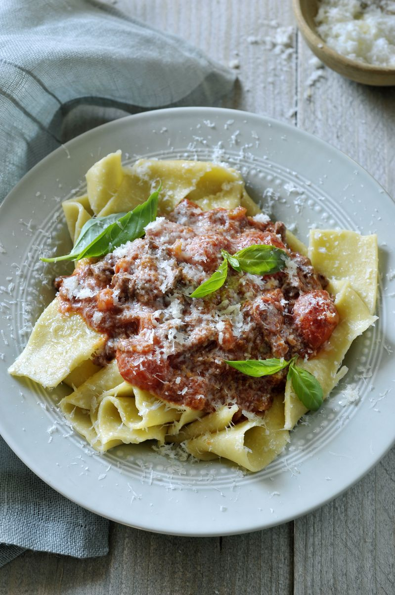

Tagliatelle al ragu
Voor 2 personen

Ingrediënten
- 200gr semola bloem
- 2 eieren
- 1 kogelbiefstuk (+- 300gr)
- 1 teentje look
- 0,5 stengel selder, fijngehakt
- 0,5 prei, fijngehakt
- 1 wortel, in stukjes
- 5-tal kerstomaatjes
- 1 takje tijm, fijngehakt
- 1 blaadje salie, fijngehakt
- 100 ml rode wijn
- 600 ml passata
- 600 ml olijfolie
Bereidingswijze
- Maak de verse tagliatelle volgens het
basisrecept van Peppe.
- Hak de kogelbiefstuk zéér fijn. Stoof het vlees samen met een teentje look aan in een scheutje olijfolie.
Voeg vervolgens de groentjes en de kruiden toe en laat meestoven. Blus met de rode wijn en de passata.
Laat rustig pruttelen gedurende een vijftal minuutjes.
- Breng gezouten water aan de kook en kook de pastalinten al dente in 3 à 4 minuten.
- Meng de pasta onder de saus en schep in een bord. Werk af met vers geraspte parmezaan, olijfolie en peper
van de molen.